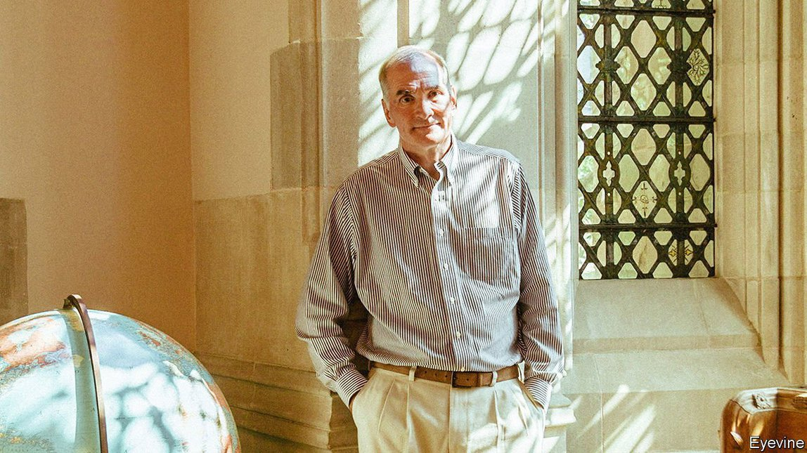

2021-05-24T15:21:12+00:00
冬青树与常春藤
投资大师戴维·斯文森5月5日离世
在耶鲁大学，斯文森完善了现代捐赠基金模式

自上世纪八十年代开始，一小批美国大型高校的捐赠基金开始将它们的投资从公开交易的股票和债券转移到风险资本和私募股权等“另类”资产。于5月5日离世、享年67岁的戴维·斯文森（David Swensen）完善了这种方法。自那以后，这种被称为捐赠基金模式、耶鲁模式或斯文森模式的方法被家族办公室、主权财富基金，以及更近些年来被大型养老基金效仿。
1985年，耶鲁大学经济学家、诺奖得主詹姆斯·托宾（James Tobin）说服斯文森放弃了在华尔街的高薪职业，回到母校管理投资办公室。当时耶鲁的捐赠基金价值约10亿美元。到去年年中这一数字已增至310亿美元。即便这一惊人的增长也不能完全体现斯文森的影响力。他负责在耶鲁大学培养一大批才华出众的资产经理人。而在两本畅销书中，他向更广泛的读者群阐述了自己的投资理念。
这种投资思路有三个突出的支柱。第一个关乎时间跨度。由于捐赠基金背负着延伸至久远未来的责任，它们可以把眼光放长远。它们可以牺牲在公开市场上交易的便利度，来获得私募股权承诺的更好回报。这样一来，它们可以赚取非流动性溢价——放弃轻松卖出的选择而获得的一种奖赏。
第二大支柱关乎信息。在公开市场上难以找到定价错误的股票，因为有关上市公司的新闻迅速传播，并很快体现在价格中。但在私人市场上，做足了功课的投资者更有可能获得回报，因为在这个市场上拿到可靠的数据和分析要难得多。
第三大支柱是逆向思维的重要性。斯文森很早就有机会展现自己的这种思维方式。1987年10月股市崩盘后，他出售价格上涨的债券，大量买入价格大跌的公司股票。这种再平衡的操作符合耶鲁基金议定的政策。但是，鉴于当时市场普遍低迷的程度，这么做还是会显得很轻率。他领导的投资委员会对此忧心忡忡。一位成员警告说，如果耶鲁决策错误，那可“有得受了”。但斯文森顶住了压力。这个决定维持不变——而且获得了丰厚的回报。
如今，斯文森模型常常都被简化为一种资产分配决策：持有另类投资。但是，由于资金已经大量涌入私募股权基金，这一块的平均回报率已经和公开市场趋于一致。明显的非流动性溢价已不复存在。但斯文森关于信息的观点仍具有现实意义。收益的差异——也就是最好的基金和最差的基金之间的差距——在私募股权中要比在公开上市股票中高得多。正确选择私募股权经理需要专业知识。耶鲁大学有一些优势，比如它可以利用其校友网络来买到经营更佳的基金。
人们在一个方面对斯文森的评价过高了。在他回到耶鲁之前，捐赠基金就有创新的记录。哈佛的捐赠基金已经在变化。而且捐赠基金在从前就是资产分配的先驱：自1930年代起，常春藤盟校的基金明显从债券转向股票。而在其他方面，斯文森获得的赞誉又太少了。明星投资者通常都不擅长指导他人。但斯文森的门徒经常在其他捐赠基金中出任高级职位。“他是一个聪明的玩家，但也是一位极其出色的教官。”一位同事说。在这方面，就和在投资实践的其他事务上一样，戴维·斯文森是名副其实的异类。
2021-05-24T15:21:12+00:00
The holly and the ivy
David Swensen, an influential investor, died on May 5th
At Yale, Mr Swensen perfected the modern endowment model
STARTING IN THE 1980s, the endowments of a handful of big American universities began to divert their investments away from publicly traded equities and bonds towards “alternative” assets, such as venture capital and private equity. David Swensen, who died on May 5th aged 67, perfected the approach. Referred to variously as the endowment, Yale or Swensen model, it has since been copied—by family offices, sovereign-wealth funds and, more recently, by big pension funds.
In 1985 Mr Swensen was persuaded by James Tobin, a Nobel-prizewinning Yale economist, to give up a lucrative career on Wall Street to return to his former university to run its investment office. Yale’s endowment was then worth around $1bn. By the middle of last year the figure had risen to $31bn. Even this astonishing growth understates Mr Swensen’s influence. He was responsible for developing a stream of talented asset managers at Yale. And in two best-selling books, he set down his investment philosophy for a wider audience.
Three pillars of this thinking stand out. The first concerns time horizon. Because endowments have obligations stretching far into the future, they can take a long-term view. They can sacrifice the ease of trading in public markets for the better returns promised in private equity. By doing so, they can earn an illiquidity premium—a reward for giving up the ability to sell out easily.
The second pillar concerns information. It is hard to find mispriced stocks in the public markets, because news about listed companies travels fast and is quickly incorporated into prices. But investors in private markets who do their homework are more likely to be rewarded. That is because reliable data and analysis are much harder to come by.
The third pillar is the importance of a contrarian mindset. Mr Swensen had a chance early on to demonstrate his. Following the stockmarket crash in October 1987, he had loaded up on company shares, which had become much cheaper, by selling bonds, which had risen in price. This rebalancing was in line with the fund’s agreed policy. But set against the prevailing market gloom, it looked rash. His investment committee was worried. One member warned that there would be “hell to pay” if Yale got it wrong. But Mr Swensen stuck to his guns. The decision stood—and paid off handsomely.
These days, the Swensen model is often reduced to an asset-allocation decision: hold alternatives. But as money has flooded into private-equity funds, average returns have converged on the returns in public markets. There is no longer an obvious illiquidity premium. But Mr Swensen’s point about information remains relevant. The dispersion of returns—the gap between the best and worst funds—is far higher in private than in public equity. Selecting the right private-equity manager takes expertise. Yale has some advantages: it can, say, tap into its alumni network for access to the better-run funds.
Mr Swensen is given too much credit in one regard. Endowments had a history of innovation before his return to Yale. Harvard’s was already changing. And endowments had previously been pioneers in asset allocation: the Ivy League funds shifted markedly from bonds into equities from the 1930s. In other respects Mr Swensen gets too little credit. Star investors are generally not good at mentoring others. But Swensen alumni have regularly turned up in senior jobs at other endowments. “He was a smart player but also an incredibly good coach,” says a colleague. In this, as in other matters of investment practice, David Swensen was a true outlier. ■
2021-05-24T15:21:12+00:00
冬青樹與常春藤
投資大師戴維·斯文森5月5日離世
在耶魯大學，斯文森完善了現代捐贈基金模式
自上世紀八十年代開始，一小批美國大型高校的捐贈基金開始將它們的投資從公開交易的股票和債券轉移到風險資本和私募股權等“另類”資產。於5月5日離世、享年67歲的戴維·斯文森（David Swensen）完善了這種方法。自那以後，這種被稱為捐贈基金模式、耶魯模式或斯文森模式的方法被家族辦公室、主權財富基金，以及更近些年來被大型養老基金效仿。
1985年，耶魯大學經濟學家、諾獎得主詹姆斯·托賓（James Tobin）說服斯文森放棄了在華爾街的高薪職業，回到母校管理投資辦公室。當時耶魯的捐贈基金價值約10億美元。到去年年中這一數字已增至310億美元。即便這一驚人的增長也不能完全體現斯文森的影響力。他負責在耶魯大學培養一大批才華出眾的資產經理人。而在兩本暢銷書中，他向更廣泛的讀者群闡述了自己的投資理念。
這種投資思路有三個突出的支柱。第一個關乎時間跨度。由於捐贈基金背負着延伸至久遠未來的責任，它們可以把眼光放長遠。它們可以犧牲在公開市場上交易的便利度，來獲得私募股權承諾的更好回報。這樣一來，它們可以賺取非流動性溢價——放棄輕鬆賣出的選擇而獲得的一種獎賞。
第二大支柱關乎信息。在公開市場上難以找到定價錯誤的股票，因為有關上市公司的新聞迅速傳播，並很快體現在價格中。但在私人市場上，做足了功課的投資者更有可能獲得回報，因為在這個市場上拿到可靠的數據和分析要難得多。
第三大支柱是逆向思維的重要性。斯文森很早就有機會展現自己的這種思維方式。1987年10月股市崩盤後，他出售價格上漲的債券，大量買入價格大跌的公司股票。這種再平衡的操作符合耶魯基金議定的政策。但是，鑒於當時市場普遍低迷的程度，這麼做還是會顯得很輕率。他領導的投資委員會對此憂心忡忡。一位成員警告說，如果耶魯決策錯誤，那可“有得受了”。但斯文森頂住了壓力。這個決定維持不變——而且獲得了豐厚的回報。
如今，斯文森模型常常都被簡化為一種資產分配決策：持有另類投資。但是，由於資金已經大量湧入私募股權基金，這一塊的平均回報率已經和公開市場趨於一致。明顯的非流動性溢價已不復存在。但斯文森關於信息的觀點仍具有現實意義。收益的差異——也就是最好的基金和最差的基金之間的差距——在私募股權中要比在公開上市股票中高得多。正確選擇私募股權經理需要專業知識。耶魯大學有一些優勢，比如它可以利用其校友網絡來買到經營更佳的基金。
人們在一個方面對斯文森的評價過高了。在他回到耶魯之前，捐贈基金就有創新的記錄。哈佛的捐贈基金已經在變化。而且捐贈基金在從前就是資產分配的先驅：自1930年代起，常春藤盟校的基金明顯從債券轉向股票。而在其他方面，斯文森獲得的讚譽又太少了。明星投資者通常都不擅長指導他人。但斯文森的門徒經常在其他捐贈基金中出任高級職位。“他是一個聰明的玩家，但也是一位極其出色的教官。”一位同事說。在這方面，就和在投資實踐的其他事務上一樣，戴維·斯文森是名副其實的異類。